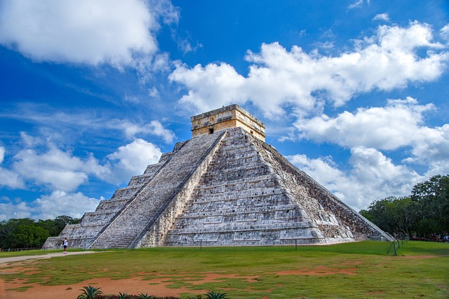
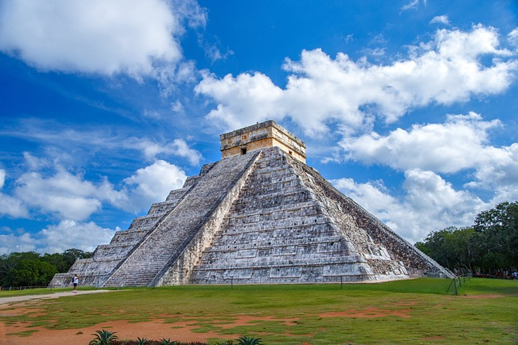
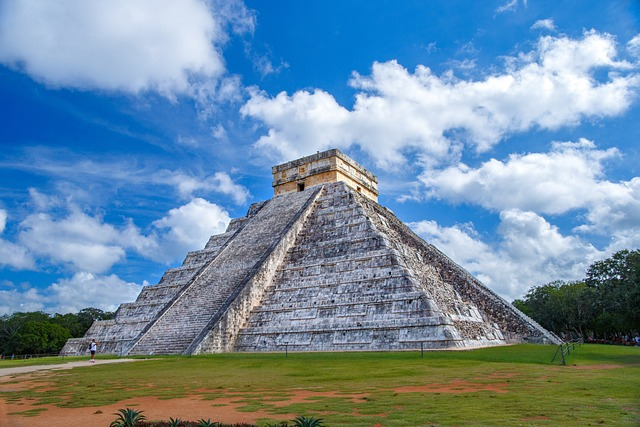

Galeria Zdjęć

 

Tabela Informacyjna
| Cud | Lokalizacja | Rok Powstania |
|---|---|---|
| Wielki Mur Chiński | Chiny | VII w. p.n.e. |
| Koloseum | Rzym, Włochy | 80 n.e. |
| Machu Picchu | Peru | XV w. |

| Cud | Lokalizacja | Rok Powstania |
|---|---|---|
| Wielki Mur Chiński | Chiny | VII w. p.n.e. |
| Koloseum | Rzym, Włochy | 80 n.e. |
| Machu Picchu | Peru | XV w. |